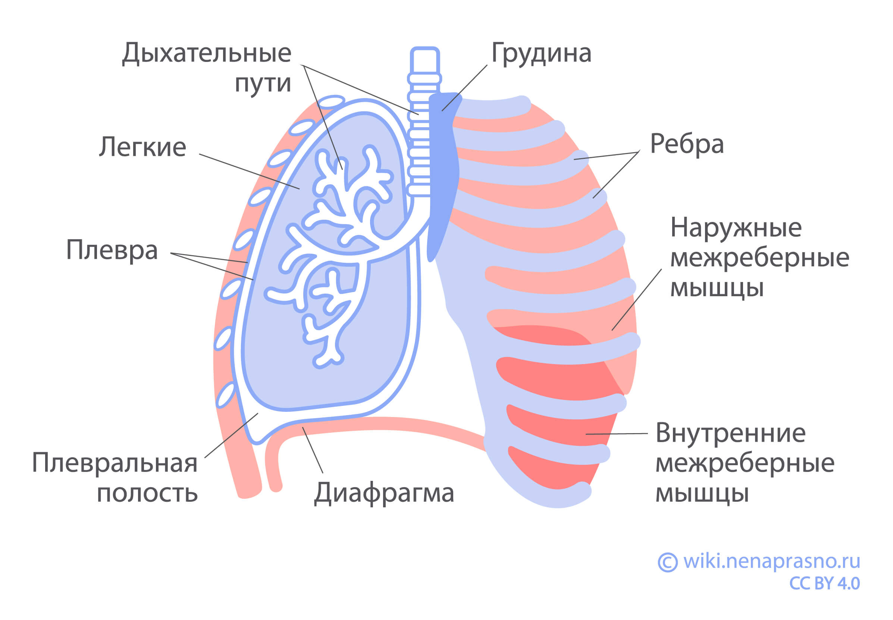
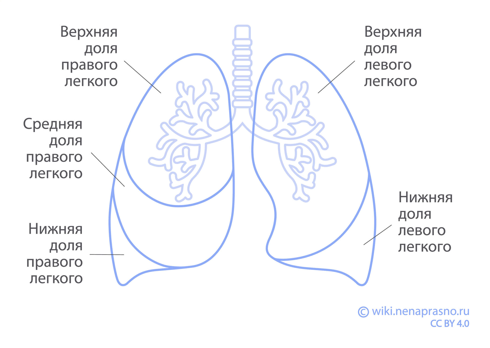
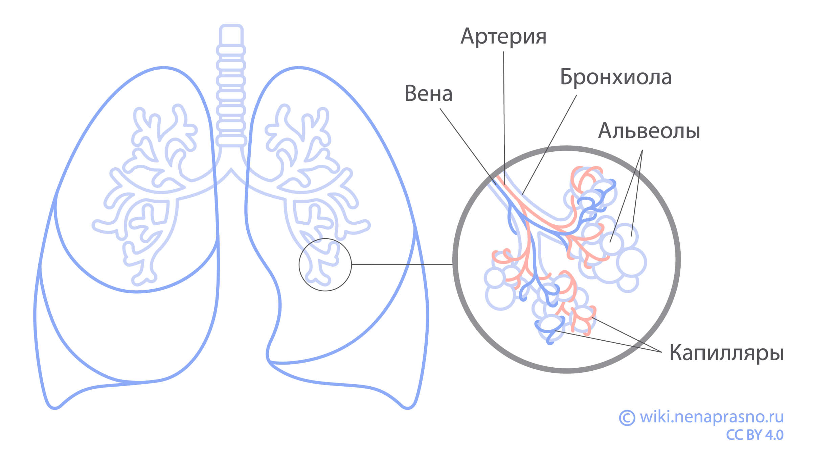
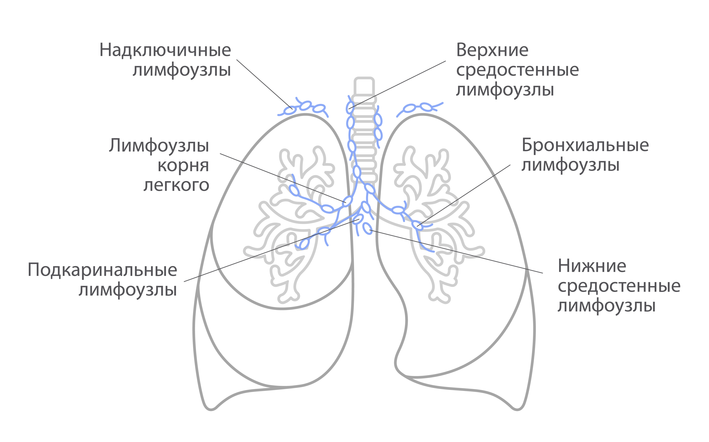

Лёгкие - это парный орган дыхания, расположенный в грудной полости. Они обеспечивают газообмен между воздухом и кровью. Правое лёгкое состоит из трёх долей, а левое - из двух.
The lungs are a paired respiratory organ located in the chest cavity. They provide gas exchange between air and blood. The right lung consists of three lobes, and the left one has two lobes.
Өкпе - кеуде қуысында орналасқан жұп тыныс алу мүшесі. Олар ауа мен қан арасында газ алмасуын қамтамасыз етеді. Оң өкпе үш бөліктен, ал сол өкпе екі бөліктен тұрады.

Функции лёгких
Functions of the lungs
Өкпенің функциялары
Основная функция лёгких - газообмен. Кислород из воздуха поступает в кровь, а углекислый газ удаляется из организма. Лёгкие также участвуют в терморегуляции и защите организма от инфекций.
The main function of the lungs is gas exchange. Oxygen from the air enters the blood, and carbon dioxide is removed from the body. The lungs are also involved in thermoregulation and protecting the body from infections.
Өкпенің негізгі функциясы - газ алмасу. Ауадағы оттегі қанға өтеді, ал көмірқышқыл газы организмнен шығарылады. Өкпе сонымен қатар терморегуляцияға және организмді инфекциялардан қорғауға қатысады.
Процесс дыхания
Breathing process
Тыныс алу процесі
Дыхание осуществляется за счёт работы диафрагмы и межрёберных мышц. При вдохе грудная клетка расширяется, а при выдохе - сжимается. В альвеолах происходит обмен кислорода и углекислого газа.
Breathing is carried out by the work of the diaphragm and intercostal muscles. During inhalation, the chest expands, and during exhalation, it contracts. The exchange of oxygen and carbon dioxide occurs in the alveoli.
Тыныс алу диафрагма мен қабырғааралық бұлшықеттердің жұмысы арқылы жүзеге асады. Тыныс жұтқанда кеуде қуысы кеңейеді, ал тыныс шығарғанда тарылады. Альвеолаларда оттегі мен көмірқышқыл газы алмасады.

Что такое лёгкие?
What are lungs?
Өкпе деген не?
Из чего состоит грудная клетка?
What does the chest consist of?
Кеуде қуысы неден тұрады?
Грудная клетка — это действительно клетка из костей, защищающих легкие и сердце. Спереди находится грудина, продолговатая плоская кость, по бокам 12 пар ребер, сзади — грудной отдел позвоночника. Ребра соединены хрящами с грудиной и суставами с позвонками. Это позволяет им двигаться и вместе с диафрагмой растягивать легкие для вдоха и сжимать для выдоха.
The chest is truly a cage of bones that protects the lungs and heart. In front is the sternum, an elongated flat bone, on the sides are 12 pairs of ribs, and in the back is the thoracic spine. The ribs are connected by cartilage to the sternum and by joints to the vertebrae. This allows them to move and, together with the diaphragm, expand the lungs for inhalation and compress them for exhalation.
Кеуде қуысы - өкпені және жүректі қорғайтын шынымен де сүйектерден тұратын қаңқа. Алдыңғы жағында ұзыншақ жалпақ сүйек - төс сүйегі, бүйірлерінде 12 жұп қабырға, артқы жағында - кеуде омыртқалары орналасқан. Қабырғалар шеміршектер арқылы төс сүйегімен және буындар арқылы омыртқалармен жалғасқан. Бұл оларға қозғалуға және диафрагмамен бірге тыныс жұтқанда өкпені кеңейтуге, тыныс шығарғанда қысуға мүмкіндік береді.

Двигают ребра мышцы, расположенные между ними, а также снаружи и внутри грудной клетки.
The ribs are moved by muscles located between them, as well as outside and inside the chest.
Қабырғаларды олардың арасында, сондай-ақ кеуде қуысының сыртында және ішінде орналасқан бұлшықеттер қозғайды.
Над грудной клеткой у нас шея, а под ней — диафрагма, крупная мышца, куполом покрывающая лежащую ниже брюшную полость.
Above the chest is the neck, and below it is the diaphragm, a large muscle that domes over the abdominal cavity below.
Кеуде қуысының үстінде мойынымыз, ал астында - қуыс қуысын құмғақтайтын үлкен бұлшықет - диафрагма орналасқан.
Середина грудной клетки называется средостение. Тут находится сердце, проходят пищевод, крупные сосуды и нервы. Пространство слева и справа от них занимают легкие, левое и правое.
The middle of the chest is called the mediastinum. Here is the heart, the esophagus, large vessels and nerves pass through. The space to the left and right of them is occupied by the lungs, left and right.
Кеуде қуысының ортасы ортаңғы кеуде деп аталады. Мұнда жүрек, өңеш, ірі қан тамырлары мен жүйкелер өтеді. Олардың сол және оң жағындағы кеңістікті сол және оң өкпелер алады.
Как устроены легкие?
How are the lungs structured?
Өкпе қалай құрылған?
Правое легкое несколько больше левого, в нем 3 доли — верхняя, средняя и нижняя. В левом легком только верхняя и нижняя.
The right lung is slightly larger than the left, it has 3 lobes - upper, middle and lower. The left lung has only upper and lower lobes.
Оң өкпе сол өкпеге қарағанда сәл үлкен, онда 3 бөлік бар - жоғарғы, ортаңғы және төменгі. Сол өкпеде тек жоғарғы және төменгі бөліктер бар.

Каждая доля состоит из сегментов, и сегментов в правом и левом легком поровну, по 10 в каждом. В определенных случаях в ходе операции удаляют только пораженный сегмент и сохраняют здоровую ткань легкого.
Each lobe consists of segments, and there are an equal number of segments in the right and left lungs, 10 in each. In certain cases, during surgery, only the affected segment is removed and healthy lung tissue is preserved.
Әрбір бөлік сегменттерден тұрады, ал оң және сол өкпеде сегменттер саны бірдей, әрқайсысында 10-нан. Кейбір жағдайларда операция кезінде тек зақымдалған сегмент алынып, өкпенің сау тіні сақталады.
Дыхательное горло (трахея) делится на два воздухоносных пути (бронха) и к каждому легкому подходит один главный бронх. Каждый из них в своем легком делится на долевые и сегментарные бронхи, а дальше на более мелкие и, наконец, на бронхиолы. У взрослого человека от 10 до 30 разветвлений от трахеи до бронхиол.
The windpipe (trachea) divides into two airways (bronchi) and one main bronchus approaches each lung. Each of them in its lung is divided into lobar and segmental bronchi, and then into smaller ones and, finally, into bronchioles. An adult has from 10 to 30 branches from the trachea to the bronchioles.
Тыныс алу жолы (трахея) екі ауа жолына (бронхтарға) бөлінеді және әрбір өкпеге бір негізгі бронх барады. Әрқайсысы өз өкпесінде бөліктерге және сегменттік бронхтарға бөлінеді, содан кейін кішіректерге және, ақырында, бронхиолаларға бөлінеді. Ересек адамда трахеядан бронхиолаларға дейін 10-нан 30-ға дейін тармақтар бар.
Конечная структура в легком — альвеолы. Каждая из бронхиол заканчивается гроздью пузырьков, альвеол, окруженных сетью кровеносных сосудов. В стенках альвеол есть клетки, обеспечивающие газообмен — проведение кислорода из воздуха в кровь и выведение углекислого газа в выдыхаемый воздух. А также клетки, производящие специальную жидкость с низким коэффициентом поверхностного натяжения, которая не позволяет альвеолам спадаться во время выдоха.
The final structure in the lung is the alveoli. Each bronchiole ends in a cluster of bubbles, alveoli, surrounded by a network of blood vessels. The walls of the alveoli contain cells that ensure gas exchange - the transfer of oxygen from the air into the blood and the removal of carbon dioxide into the exhaled air. As well as cells that produce a special fluid with a low surface tension coefficient that prevents the alveoli from collapsing during exhalation.
Өкпедегі соңғы құрылым - альвеолалар. Әрбір бронхиола қан тамырлары желісімен қоршалған көпіршіктер шоғырымен, альвеолалармен аяқталады. Альвеолалардың қабырғаларында газ алмасуын қамтамасыз ететін клеткалар бар - ауадағы оттегіні қанға өткізу және көмірқышқыл газын шығарылатын ауаға шығару. Сондай-ақ, тыныс шығарған кезде альвеолалардың құлауына жол бермейтін төмен беттік керілу коэффициенті бар арнайы сұйықтық өндіретін клеткалар бар.
Поверхность легких снаружи и грудной клетки изнутри покрыта тонкой пленкой плевральной оболочки. Плевра позволяет легким скользить при дыхании, так как листки ее очень гладкие, а между ними, в плевральной полости, находится небольшое количество плевральной жидкости.
The surface of the lungs on the outside and the chest on the inside are covered with a thin film of the pleural membrane. The pleura allows the lungs to slide during breathing, since its layers are very smooth, and between them, in the pleural cavity, there is a small amount of pleural fluid.
Өкпенің сыртқы беті және кеуде қуысының ішкі жағы плевра қабығының жұқа қабатымен қапталған. Плевра өкпеге тыныс алу кезінде сырғанауға мүмкіндік береді, өйткені оның қабаттары өте тегіс, ал олардың арасында, плевра қуысында, аз мөлшерде плевра сұйықтығы болады.
На каждом легком выделяют наружную (реберную), внутреннюю (средостенную) и нижнюю (диафрагмальную) поверхности. Со стороны средостенной поверхности через ворота в легкие попадают главные бронхи, кровеносные и лимфатические сосуды, нервы.
On each lung, the outer (costal), inner (mediastinal) and lower (diaphragmatic) surfaces are distinguished. From the mediastinal surface, through the hilum, the main bronchi, blood and lymphatic vessels, and nerves enter the lungs.
Әрбір өкпеде сыртқы (қабырғалық), ішкі (ортаңғы кеуделік) және төменгі (диафрагмалық) беттер бөлінеді. Ортаңғы кеуделік бет жағынан негізгі бронхтар, қан және лимфа тамырлары, жүйкелер өкпеге енеді.
Какие лимфоузлы связаны с легкими?
Which lymph nodes are associated with the lungs?
Өкпеге қандай лимфа түйіндері байланысты?
Лимфатические узлы (лимфоузлы) представляют собой маленькие бобовидные органы. Они «фильтруют» лимфу, задерживают инородные частицы — болезнетворные микроорганизмы и переродившиеся собственные клетки, и борются с ними. Лимфоузлы располагаются по ходу сосудов по всему организму.
Lymph nodes are small bean-shaped organs. They "filter" lymph, trap foreign particles - pathogenic microorganisms and degenerated own cells, and fight them. Lymph nodes are located along the vessels throughout the body.
Лимфа түйіндері - кішкене астық тәрізді мүшелер. Олар лимфаны "сүзеді", бөгде бөлшектерді - ауру тудыратын микроорганизмдер мен өзгерген өз клеткаларын ұстап, олармен күреседі. Лимфа түйіндері бүкіл организм бойынша тамырлар бойымен орналасқан.
Лимфоузлы, связанные с легкими, располагаются преимущественно в средостении. В зависимости от расположения различают надключичные, средостенные и корневые лимфоузлы.
Lymph nodes associated with the lungs are located mainly in the mediastinum. Depending on the location, supraclavicular, mediastinal and root lymph nodes are distinguished.
Өкпеге байланысты лимфа түйіндері негізінен ортаңғы кеудеде орналасқан. Орналасуына байланысті білік үсті, ортаңғы кеуделік және түбірлік лимфа түйіндері бөлінеді.
При раке легкого опухолевые клетки по лимфатическим сосудам могут попасть в лимфатические узлы. Поражение лимфатических узлов учитывают для определения стадии заболевания и прогноза.
In lung cancer, tumor cells can enter the lymph nodes through the lymphatic vessels. Lymph node involvement is taken into account to determine the stage of the disease and prognosis.
Өкпе қатерлі ісігінде ісік клеткалары лимфа тамырлары арқылы лимфа түйіндеріне өте алады. Лимфа түйіндерінің зақымдануы аурудың кезеңін және болжамды анықтау үшін ескеріледі.
Какие функции выполняют легкие?
What functions do the lungs perform?
Өкпе қандай функцияларды атқарады?
В легких происходит газообмен между воздухом и кровью: кислород поступает из воздуха в кровь, а из крови в воздух выделяется углекислый газ. Затем воздух, потерявший часть кислорода и более насыщенный углекислым газом, выдыхается.
Gas exchange occurs in the lungs between air and blood: oxygen passes from the air into the blood, and carbon dioxide is released from the blood into the air. Then the air, which has lost some oxygen and is more saturated with carbon dioxide, is exhaled.
Өкпеде ауа мен қан арасында газ алмасу жүреді: оттегі ауадан қанға өтеді, ал қаннан ауаға көмірқышқыл газы бөлінеді. Содан кейін оттегінің бір бөлігін жоғалтқан және көмірқышқыл газына қаныққан ауа сыртқа шығарылады.
Кроме того, легкие выполняют защитную функцию. Бронхиальная слизь способствует выведению пылевых частиц, микроорганизмов и вирусов. Благодаря механорецепторам глотки, гортани, трахеи и бронхов возникает кашель и приводит к механическому удалению посторонних частиц из дыхательных путей.
In addition, the lungs perform a protective function. Bronchial mucus helps remove dust particles, microorganisms and viruses. Thanks to the mechanoreceptors of the pharynx, larynx, trachea and bronchi, coughing occurs and leads to the mechanical removal of foreign particles from the respiratory tract.
Сонымен қатар, өкпе қорғаныс функциясын атқарады. Бронхтардың шырышы тозаң бөлшектерін, микроорганизмдер мен вирустарды шығаруға көмектеседі. Жұтқыншақ, көмей, трахея және бронхтардың механорецепторларының арқасында жөтел пайда болады және тыныс жолдарынан бөгде бөлшектерді механикалық түрде жоюға әкеледі.
Легкие принимают участие также в водно-солевом обмене. Вместе с дыханием за сутки выделяется около 500 мл воды.
The lungs are also involved in water-salt metabolism. About 500 ml of water is released per day through breathing.
Өкпе су-тұз алмасуына да қатысады. Тыныс алу арқылы күніне шамамен 500 мл су бөлінеді.
Как работают легкие?
How do the lungs work?
Өкпе қалай жұмыс істейді?
Во время вдоха диафрагма (большая мышца, разделяющая грудную клетку и брюшную полость) и межреберные мышцы сокращаются. Грудная клетка расширяется и растягивает легкие. Из-за увеличения их объема давление в легких снижается, и воздух через дыхательные пути затягивается внутрь. Таким образом воздух поступает через трахею и бронхи в альвеолы. Мембрана альвеол и стенки сосудов плотно прилежат друг к другу и формируют тонкий воздушно-кровяной барьер. Через него молекулы газов проникают из воздуха в кровь, а из крови выделяются в воздух. Кровь насыщается кислородом, а углекислый газ выводится из организма.
During inhalation, the diaphragm (a large muscle separating the chest and abdominal cavity) and intercostal muscles contract. The chest expands and stretches the lungs. Due to the increase in their volume, the pressure in the lungs decreases, and air is drawn inward through the respiratory tract. Thus, air enters through the trachea and bronchi into the alveoli. The membrane of the alveoli and the walls of the vessels are tightly adjacent to each other and form a thin air-blood barrier. Through it, gas molecules penetrate from the air into the blood, and are released from the blood into the air. The blood is saturated with oxygen, and carbon dioxide is removed from the body.
Тыныс жұтқанда диафрагма (кеуде қуысы мен құрсақ қуысын бөлетін үлкен бұлшықет) және қабырғааралық бұлшықеттер жиырылады. Кеуде қуысы кеңейіп, өкпені созады. Олардың көлемінің артуына байланысты өкпедегі қысым төмендейді және ауа тыныс жолдары арқылы ішке тартылады. Осылайша ауа трахея және бронхтар арқылы альвеолаларға өтеді. Альвеолалардың мембранасы мен қан тамырларының қабырғалары бір-біріне тығыз жабысып, жұқа ауа-қан тосқауылын құрайды. Ол арқылы газ молекулалары ауадан қанға өтеді, ал қаннан ауаға бөлінеді. Қан оттегімен қанығады, ал көмірқышқыл газы организмнен шығарылады.
Во время выдоха мышцы расслабляются. Легкие, благодаря эластичности, сжимаются, уменьшаются в объеме. Воздух, богатый углекислым газом, по дыхательным путям выталкивается наружу.
During exhalation, the muscles relax. The lungs, due to their elasticity, compress and decrease in volume. Air rich in carbon dioxide is pushed out through the respiratory tract.
Тыныс шығарғанда бұлшықеттер босаңсайды. Өкпе серпімділігінің арқасында қысылып, көлемі кішірейеді. Көмірқышқыл газына бай ауа тыныс жолдары арқылы сыртқа шығарылады.